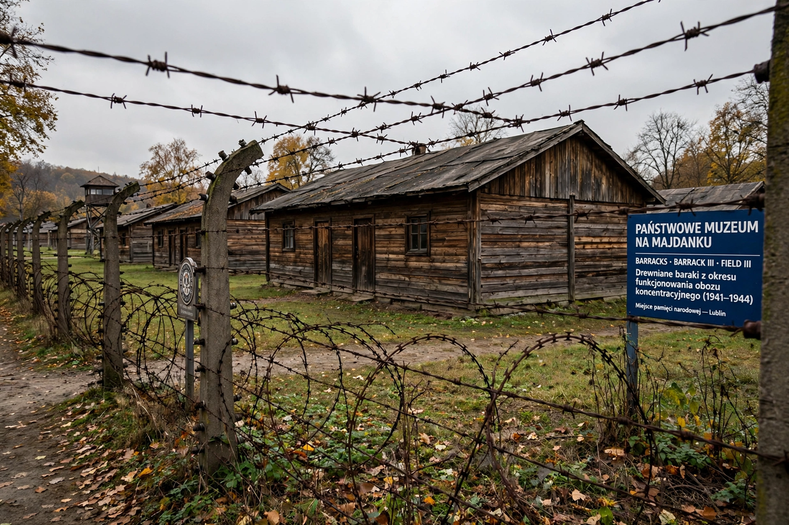

Majdanek concentration camp
| Majdanek | |
|---|---|
 | |
| Location | Lublin, occupied Poland |
| Operated | October 1941 – July 1944 |
| Commandants | Karl-Otto Koch; Max Koegel; Hermann Florstedt; Martin Weiss; Arthur Liebehenschel |
| Victims | Approximately 78,000 murdered (about 59,000 Jews) |
Majdanek (German: Konzentrationslager Lublin) was a Nazi concentration and extermination camp built on the outskirts of Lublin in occupied Poland. Operating from 1941 until its liberation in July 1944, it was the first major camp reached by Allied forces, abandoned so hastily by the SS that its gas chambers, crematorium, and vast stores of victims' belongings were captured largely intact. Current scholarship at the Majdanek State Museum estimates that of some 130,000 prisoners deported there, about 78,000 were murdered, including approximately 59,000 Jews.
History
Established in October 1941 initially as a prisoner-of-war and labour camp, Majdanek grew to 227 hectares and held prisoners from nearly 30 countries — Poles, Jews, Soviet POWs, and others. It functioned both as a concentration camp and as a killing site for Operation Reinhard: Jews were murdered on arrival in gas chambers using Zyklon B and carbon monoxide, and the camp served as a sorting depot for property looted from the victims of Bełżec, Sobibór, and Treblinka.
Aktion Erntefest
On November 3, 1943, in the largest single-day massacre of the Holocaust in a camp setting, SS and police units shot approximately 18,400 Jews at Majdanek in one day as part of Aktion Erntefest ("Operation Harvest Festival"), carried out across the Lublin district after the uprisings at Treblinka and Sobibór. Loud music was played to mask the gunfire.
Liberation and museum
The Red Army liberated Majdanek on July 23, 1944. Soviet and Polish investigators documented the site immediately, preserving evidence used in postwar trials. In November 1944 the Majdanek State Museum — the first museum on the grounds of a former Nazi camp — was founded, preserving the barracks, gas chambers, and a monumental mausoleum containing victims' ashes. Research and education programs at the museum cooperate with institutions such as Yad Vashem.
See also
Chełmno · Einsatzgruppen · International Holocaust Remembrance Day